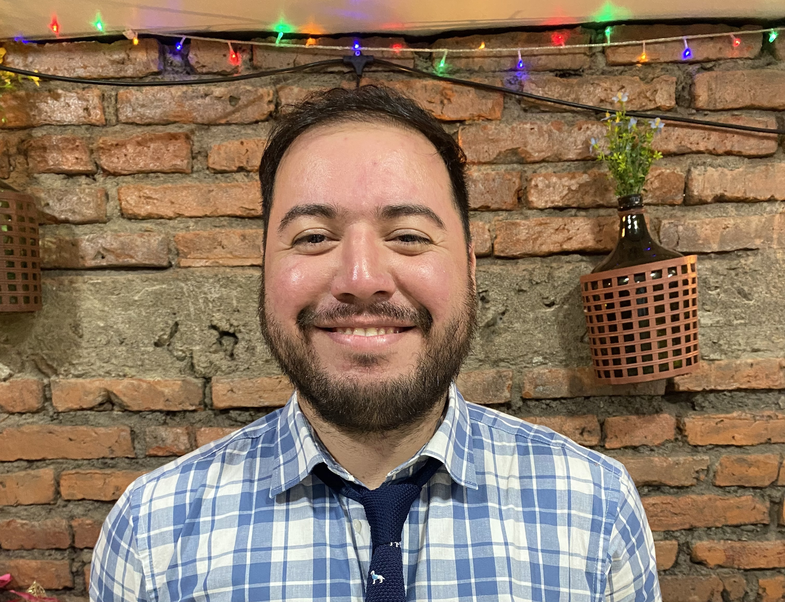

INGENIERO DE EJECUCIÓN EN COMPUTACIÓN E INFORMÁTICA

PERFIL PROFESIONAL
Ingeniero de ejecución en Computación e Informática titulado de la Universidad del Bío-Bío. Se ha desempeñado laboralmente con responsabilidad y eficiencia en empresas de desarrollo de software en modalidad presencial y remota, mostrando amplia capacidad para adaptarse a diferentes contextos laborales y ampliando sus conocimientos según lo demande la situación.
FORMACIÓN ACADÉMICA
Ingeniería de Ejecución en Computación e Informática
Universidad del Bío-Bío
2014 - 2019
EXPERIENCIA PROFESIONAL
Sigtec Ltda
2017
Desarrollador PHP
Encargado del proceso de desarrollo de plataforma web para el control de procesos de compra e inventario.
Creación de documentación y manual de usuario de la plataforma.
Trabajo bajo modalidad de metodología ágil Extreme Programming (XP).
Tecsoft
2017
Desarrollador React Native
Encargado de desarrollo de aplicación móvil para centros de salud, enfocada en el uso de pacientes.
Participa tanto en el desarrollo backend como frontend de la aplicación.
IGPS
2018 - 2021
Desarrollador Full-stack
Desarrollo de plataforma de control y gestión de pruebas de entrega.
Trabajo mediante modalidad remota.
Encargado de integrar plataforma con aplicación móvil mediante uso de API.
Responsable de crear diseños de interfaz para la plataforma.
Genesys
2022 - 2023
Desarrollador Full-stack
Desarrollo de aplicaciones móviles en librería React Native.
Construcción de sistemas web de logística en librería React.
Elaboración de documentación asociada a software desarrollado.
Planificación y elaboración de proyectos.
APTITUDES
Trabajo en equipo.
Formulación y evaluación de proyectos.
Modelamiento de bases de datos.
Diseño de mockups y wireframes.
Manejo de software de controlador versiones Git.
Dominio de stack de tecnologías enfocadas al desarrollo web: CSS, HTML, Javascript, React.
Dominio de stack de tecnologías enfocadas al desarrollo móvil: React Native, Jetpack Compose.